Lesson 6: formatting-text
Lesson 6: Formatting Text
/en/word/text-basics/content/
Introduction
Formatted text can draw the reader's attention to specific parts of a document and emphasize important information. In Word, you have several options for adjusting text, including font, size, and color. You can also adjust the alignment of the text to change how it is displayed on the page.
Watch the video below to learn more about formatting text in Word.
[](../../../../../www.youtube.com/embed/ViGf0RKbCyA.webm)
To change the font size:
- Select the text you want to modify.
 2. On the Home tab, click the Font Size drop-down arrow. Select a font size from the menu. If the font size you need is not available in the menu, you can click the Font Size box and type the desired size, then press Enter.
2. On the Home tab, click the Font Size drop-down arrow. Select a font size from the menu. If the font size you need is not available in the menu, you can click the Font Size box and type the desired size, then press Enter.
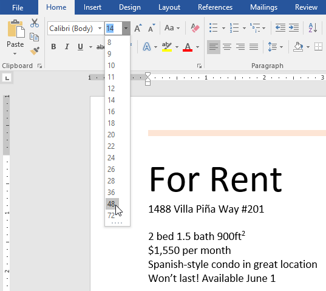
3. The font size will change in the document.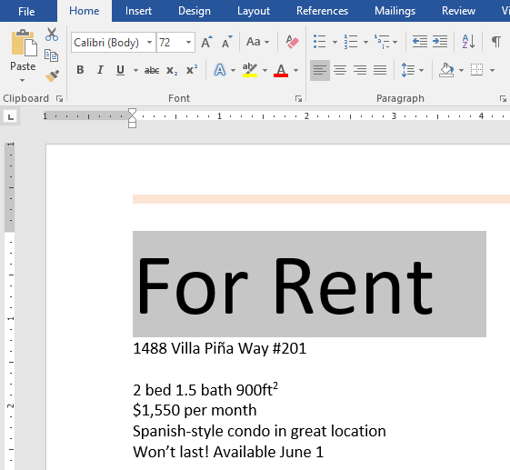
You can also use the Grow Font and Shrink Font commands to change the font size.

To change the font:
By default, the font of each new document is set to Calibri. However, Word provides many other fonts you can use to customize text.
- Select the text you want to modify.
 2. On the Home tab, click the drop-down arrow next to the Font box. A menu of font styles will appear.
3. Select the font style you want to use.
2. On the Home tab, click the drop-down arrow next to the Font box. A menu of font styles will appear.
3. Select the font style you want to use.
 4. The font will change in the document.
4. The font will change in the document.
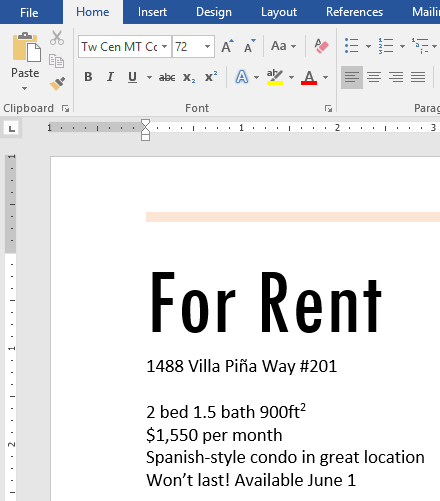
When creating a professional document or a document that contains multiple paragraphs, you'll want to select a font that's easy to read. Along with Calibri, standard reading fonts include Cambria, Times New Roman, and Arial.
To change the font color:
- Select the text you want to modify.
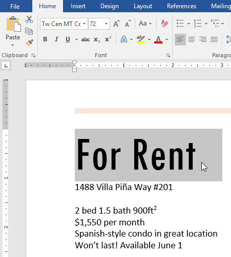
2. On the Home tab, click the Font Color drop-down arrow. The Font Color menu appears.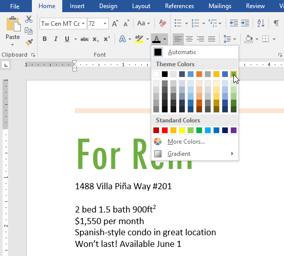
3. Select the font color you want to use. The font color will change in the document.
Your color choices aren't limited to the drop-down menu that appears. Select More Colors at the bottom of the menu to access the Colors dialog box. Choose the color you want, then click OK.
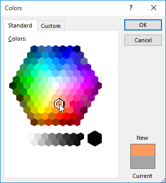
To use the Bold, Italic, and Underline commands:
The Bold, Italic, and Underline commands can be used to help draw attention to important words or phrases.
- Select the text you want to modify.
 2. On the Home tab, click the Bold (B), Italic (I), or Underline (U) command in the Font group. In our example, we'll click Bold.
2. On the Home tab, click the Bold (B), Italic (I), or Underline (U) command in the Font group. In our example, we'll click Bold.
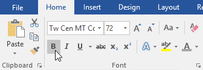
3. The selected text will be modified in the document.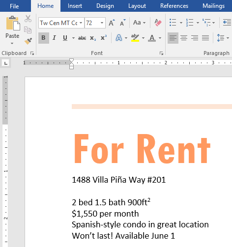
To change text case:
When you need to quickly change text case, you can use the Change Case command instead of deleting and retyping text.
- Select the text you want to modify.
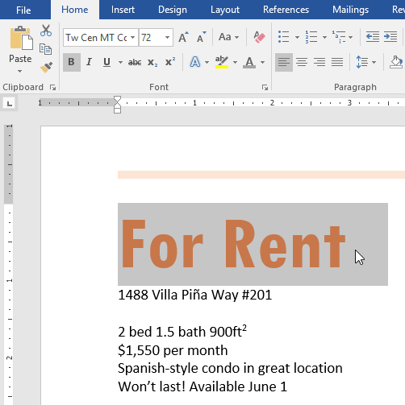
2. On the Home tab, click the Change Case command in the Font group. 3. A drop-down menu will appear. Select the desired case option from the menu. 4. The text case will be changed in the document.
4. The text case will be changed in the document.

To highlight text:
Highlighting can be a useful tool for marking important text in your document.
- Select the text you want to highlight.
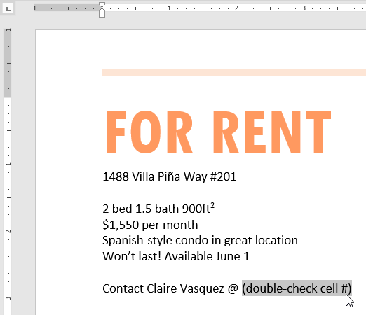
2. From the Home tab, click the Text Highlight Color drop-down arrow. The Highlight Color menu appears. 3. Select the desired highlight color. The selected text will then be highlighted in the document.
3. Select the desired highlight color. The selected text will then be highlighted in the document.
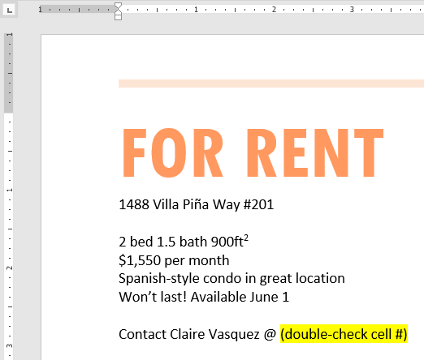
To remove highlighting, select the highlighted text, then click the Text Highlight Color drop-down arrow. Select No Color from the drop-down menu.
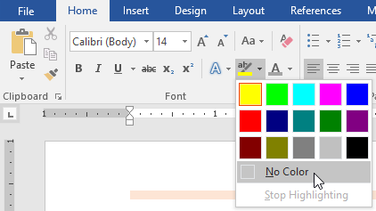
If you need to highlight several lines of text, changing the mouse into a highlighter may be a helpful alternative to selecting and highlighting individual lines. Click the Text Highlight Color command, and the cursor changes into a highlighter. You can then click and drag the highlighter over the lines you want to highlight.
To change text alignment:
By default, Word aligns text to the left margin in new documents. However, there may be times when you want to adjust text alignment to the center or right.
- Select the text you want to modify.
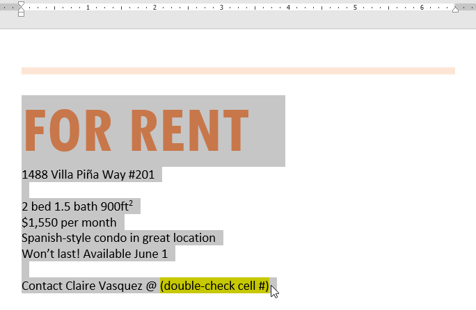
2. On the Home tab, select one of the four alignment options from the Paragraph group. In our example, we've selected Center Alignment.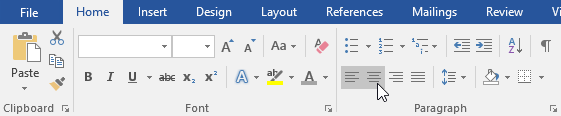
3. The text will be realigned in the document.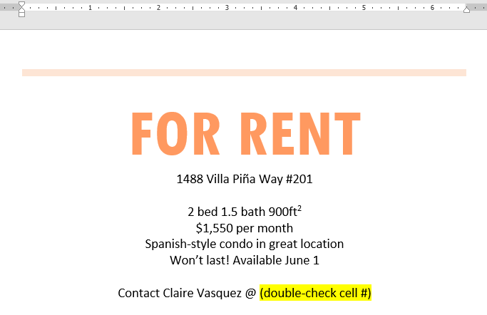
Click the arrows in the slideshow below to learn more about the four text alignment options.
Align Text Left: This aligns all selected text to the left margin. The Align Text Left command is the most common alignment and is selected by default when a new document is created. *
Center: This aligns text an equal distance from the left and right margins. *
Align Text Right: This aligns all selected text to the right margin. *
Justify: Justified text is equal on both sides. It lines up equally to the right and left margins. Many newspapers and magazines use full justification.
You can use Word's convenient Set as Default feature to save all of the formatting changes you've made and automatically apply them to new documents. To learn how to do this, read our article on Changing Your Default Settings in Word.
Challenge!
- Open our practice document.
- Scroll to page 2.
- Select the words For Rent and change the font size to 48 pt.
- With the text still selected, change the font to Franklin Gothic Demi. Note: If you don't see this font in the menu, you can select a different one.
- Use the Change Case command to change For Rent to UPPERCASE.
- Change the color of the words For Rent to Gold, Accent 4.
- Remove the highlight from the phone number (919-555-7237).
- Select all of the text from For Rent to (919-555-7237) and Center Align.
- Italicize the text in the paragraph below About Villa Piña.
-
When you're finished, your page should look like this:
/en/word/using-find-and-replace/content/